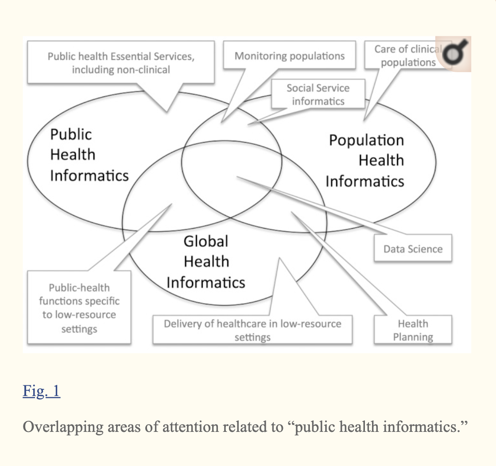

Public Health and Epidemiology Informatics: Recent Research and Trends in the United States
Website
https://www.ncbi.nlm.nih.gov/pmc/articles/PMC4587030/
Objective
To survey advances in public health and epidemiology informatics over the past three years.
Keywords
Epidemiology, disease outbreaks, public health practice, Public Health Informatics, English based, public health informatics, MEDLINE,
the Essential Services of Public Health,
EHR, interoperability amongst health info systems
Content
-
The scope of public health informatics
The conceptualization, design, development, deployment, refinement, maintenance, and evaluation of communication, surveillance, information, and learning systems relevant to public health.
-
PHI efforts
-
Anthrax attacks in the U.S. [
6
]
-
The Tokyo subway attacks [
7
]
-
Global health threats such as SARS [
8
]
-
The H1N1 pandemic [
9
]
-
MERS [
10
,
11
]
-
Ebola [
12
]
-
Data science [
13
] comprising predictive analytics (chosen as the special topic of the 2014 edition of the Yearbook [
14
]
-
Epidemiological methodology [
15
]
-
Public Health informatics and other informatics

-
Modern healthcare systems
-
non-communicable sideases >
infectious ones.
-
Tuberculosis 1.3% per year drop over the past twenty years [
20
],
-
Diabete 33% by 2050 [
21
]
-
Current focuses
-
Notifiable Disease Surveillance (clinician lab results or diagnoses reported to state agencies)
-
Syndromic Surveillance (clinical data reported to state agencies on an ongoing basis)
-
Population Health (broadly conceived)
-
Immunization Information Systems (reporting of vaccinations;
access to clinicians;
immunization forecasting)
-
Environmental systems (non-clinical sources)
-
Other
-
Surveillance Methods:
Free
-
Free text systems [
53
]
-
A natural language text processing method to pre-process and classify the text, using both heuristic statistical methods and parameters tuned to emergency contexts [
54
]
-
Text processing:
Human translation and machine translation almost equally preferred.
-
Time, cost, quality [
55
]
-
Feasibility [
56
]
-
mHealth and Social Media Infrastructure
-
Infectious disease outbreak: 21% useful ince synonyms are used rather than medical terms.
-
How to exploit twitter for public health monitoring?
[
79
]